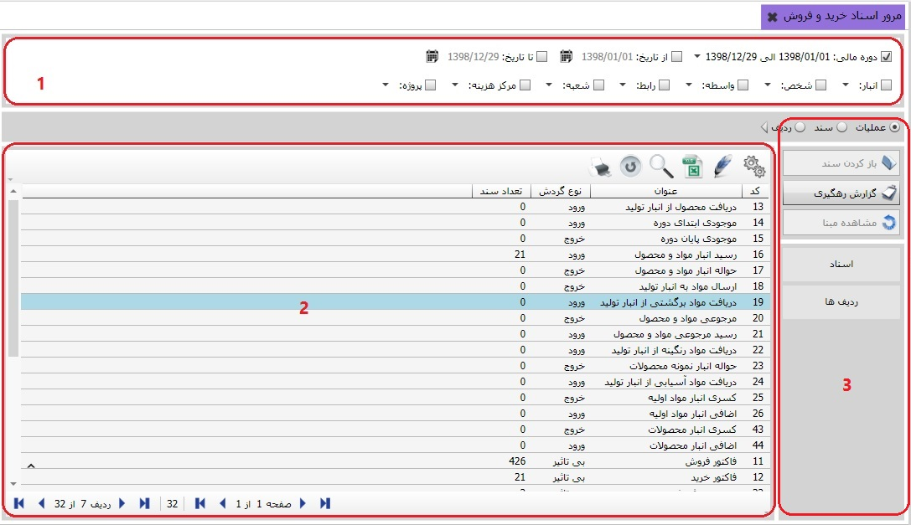
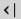
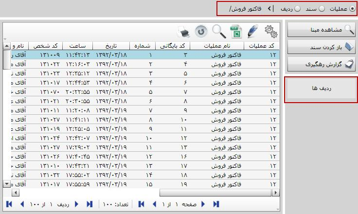

این صفحه یک صفحه مشترک بین سیستم های «خرید و فروش»، «انبار»، «صدور سفارشات» و «تولید» است و با توجه به قابلیت یکپارچگی سیستم سایان، کاربر در هر کدام از این چهار سیستم، از طریق این صفحه می تواند تمام عملیاتی که به آن ها دسترسی دارد را مرور کند.
شکل زیر صفحه «مرور اسناد خرید و فروش» را نمایش می دهد و همان طور که گفته شد می توانید کلیه عملیات های تعریف شده در این چهار سیستم را به همراه تعداد ثبت شده برای آن ها به صورت یک جا مشاهده کنید.(مثلا در شکل زیر اسناد انبار را نیز می توانید مشاهده کنید.)
در شکل بالا مشاهده می کنید که صفحه «مرور اسناد خرید و فروش» به دو قسمت تقسیم شده است.
1. کادر شماره 1 شامل تعدادی فیلتر است که به کمک آن ها می توانید عملیات و اسناد موجود در کادر شماره 2 را به تفکیک هر یک داشته باشید. با فیلتر دوره مالی می توانید دوره مالی مورد نظرتان را در سیستم انتخاب کنید یا یک بازه زمانی دلخواه تعیین کنید تا بتوانید اسناد مربوط به آن دوره مالی یا بازه زمانی را در جدول موجود در کادر 2 مشاهده کنید. همچنین توسط هر یک از فیلتر های انبار، شخص، شعبه، مرکز هزینه و پروژه می توانید عملیات و اسناد موجود در جدول را به تفکیک مشاهده نمایید.(موردی را که می خواهید بر اساس آن مرور کنید انتخاب کنید و با کلیک بر فلش موجود، از لیست باز شده گزینه مورد نظر خود را انتخاب کنید.)
2. در کادر شماره 2 در نوار وسط سه گزینه عملیات، سند و ردیف برای انتخاب وجود دارد. طبق شکل بالا با انتخاب گزینه عملیات، در جدول پایین کادر لیست عملیات های تعریف شده در 4 سیستم گفته شده به همراه نوع گردش و تعداد اسناد هر یک از عملیات نمایش داده می شود.
اگر از قسمت بالای کادر شماره 2 گزینه سند را انتخاب کنید در جدول پایین صفحه لیست کلیه اسناد صادر شده برای همه عملیات ها نشان داده خواهد شد. همچنین با انتخاب گزینه ردیف، کلیه ردیف های مربوط به همه اسناد را مشاهده خواهید کرد. به شکل زیر توجه کنید:

در شکل صفحه قبل مشاهده می کنید که با قرار گرفتن در لیست عملیات، دوگزینه با عناوین اسناد و ردیف ها در سمت راست صفحه نمایش داده می شود. با انتخاب هر عملیات از لیست عملیات موجود، اگر روی گزینه اسناد کلیک کنید می توانید به اسناد مربوط به آن عملیات دسترسی داشته باشید.(با کلیک دوبل روی نام عملیات موجود در لیست عملیات نیز می توانید به اسناد آن عملیات دسترسی داشته باشید. در آن صورت در  مقابل شکل مسیر دسترسی شما به سند مورد نظر قرار می گیرد.) همچنین با کلیک روی گزینه ردیف ها می توانید کلیه ردیف های اسناد عملیات انتخاب شده را مشاهده نمایید.
به شکل بالای همین صفحه دقت کنید، با قرار گرفتن در لیست اسناد ، گزینه ای با عنوان ردیف ها در سمت راست صفحه نمایش داده می شود. با انتخاب هر سند از جدول و کلیک روی گزینه ردیف ها، می توانید ردیف های سند انتخاب شده را مشاهده نمایید. (با کلیک دوبل روی هر سند نیز می توانید به ردیف های آن سند دسترسی داشته باشید.)

 دقت کنید که گزینه های سند و
ردیف بالای جدول با گزینه های اسناد و ردیف ها در سمت راست جدول متفاوت است. با انتخاب
گزینه های سند و ردیف بالای صفحه
می توانید اسناد و ردیف های اسناد همه عملیات های تعریف شده را به صورت یکجا مشاهده
کنید اما گزینه های سمت راست تنها اسناد و ردیف های عملیات انتخاب شده از جدول را نمایش می دهد.
دقت کنید که گزینه های سند و
ردیف بالای جدول با گزینه های اسناد و ردیف ها در سمت راست جدول متفاوت است. با انتخاب
گزینه های سند و ردیف بالای صفحه
می توانید اسناد و ردیف های اسناد همه عملیات های تعریف شده را به صورت یکجا مشاهده
کنید اما گزینه های سمت راست تنها اسناد و ردیف های عملیات انتخاب شده از جدول را نمایش می دهد.
چنانچه موقعیت شما در سطح سند یا ردیف باشد دو آیکن «مشاهده مبنا» و «باز کردن سند» فعال می شوند:
 اگر هر یک از اسناد را
انتخاب کنید و روی این گزینه کلیک کنید پنجره مشاهده مبنا نمایش داده می شود و شما می توانید
طبق توضیحاتی که قبلا
برای صفحه مشاهده مبنا ارائه شد مبنای سند انتخاب شده و سایر اطلاعات مربوط به مبنای آن سند را
مشاهده نمایید.
اگر هر یک از اسناد را
انتخاب کنید و روی این گزینه کلیک کنید پنجره مشاهده مبنا نمایش داده می شود و شما می توانید
طبق توضیحاتی که قبلا
برای صفحه مشاهده مبنا ارائه شد مبنای سند انتخاب شده و سایر اطلاعات مربوط به مبنای آن سند را
مشاهده نمایید.
 در لیست اسناد موجود در
صفحه « مرور اسناد خرید و فروش» با انتخاب هر سند و کلیک روی گزینه «باز کردن سند» فرم صدور
سند باز می شود و شما می توانید سند مورد نظر را مشاهده و در صورت نیاز ویرایش یا حذف نمایید.
در لیست اسناد موجود در
صفحه « مرور اسناد خرید و فروش» با انتخاب هر سند و کلیک روی گزینه «باز کردن سند» فرم صدور
سند باز می شود و شما می توانید سند مورد نظر را مشاهده و در صورت نیاز ویرایش یا حذف نمایید.
 با کلیک روی این گزینه
پنجره گزارش ساز سایان باز می شود و به شما این امکان را می دهد که از لیست پیش رو در نرم
افزار گزارش رهگیری داشته باشید.
با کلیک روی این گزینه
پنجره گزارش ساز سایان باز می شود و به شما این امکان را می دهد که از لیست پیش رو در نرم
افزار گزارش رهگیری داشته باشید.